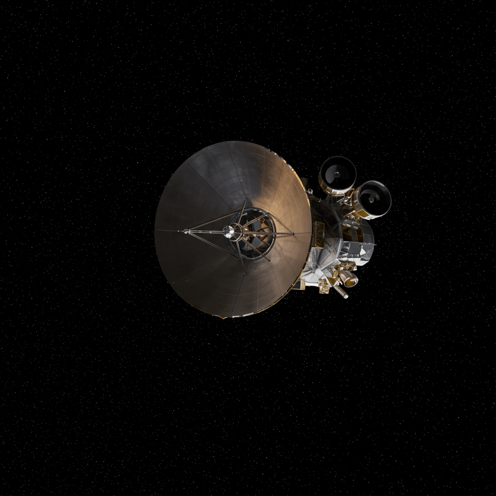

Gaia
Agencia: ESA
Fecha de lanzamiento: 19 de diciembre de 2013
Duración de misión: Operativa (más de 10 años en servicio)
Tipo de misión: Telescopio espacial de astrometría
Objetivo: Cartografiar en 3D más de mil millones de estrellas de la Vía Láctea con precisión astrométrica sin precedentes
Carga científica: Telescopio de astrometría con dos campos de visión, fotómetros, espectrómetros, sensores CCD de alta resolución
Significado del nombre
Gaia toma su nombre de la diosa griega de la Tierra, simbolizando su misión de mapear el hogar galáctico de la humanidad. Además, es el acrónimo de "Global Astrometric Interferometer for Astrophysics", reflejando su precisión para medir posiciones y movimientos estelares.
Impacto histórico
Gaia ha transformado la comprensión de la estructura y evolución de la Vía Láctea. Sus catálogos han revelado corrientes estelares, cúmulos abiertos, movimientos propios y distancias de miles de millones de estrellas. Es fundamental para estudios sobre la dinámica galáctica, la materia oscura y la formación estelar.
Estado actual
Operativo y activo. Gaia continúa enviando datos de alta calidad, con futuras liberaciones de catálogos planificadas. Su misión fue extendida oficialmente hasta al menos 2025, con posibilidad de nuevas extensiones si los instrumentos siguen en buen estado.